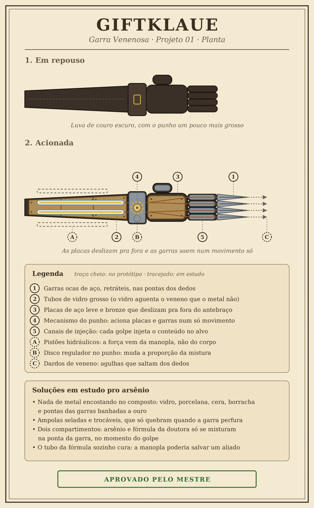
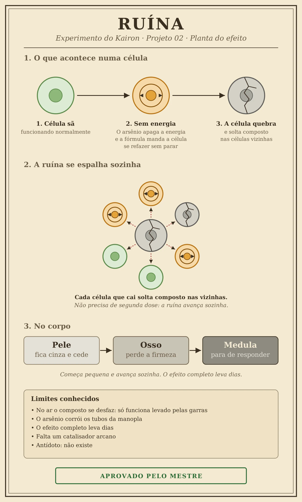
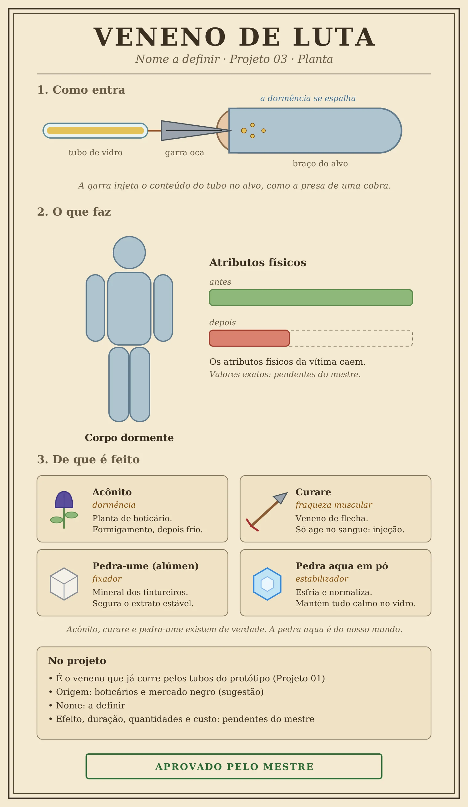
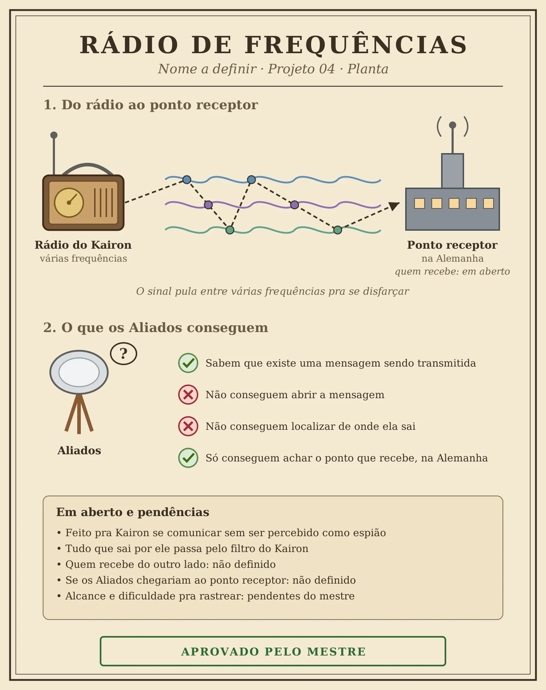
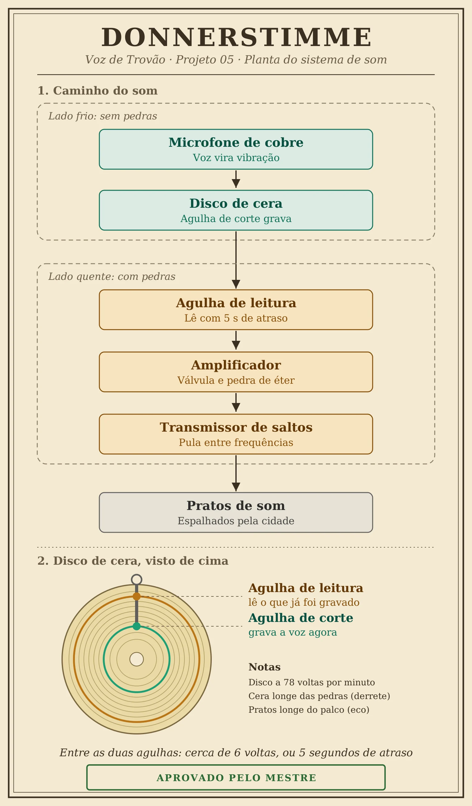
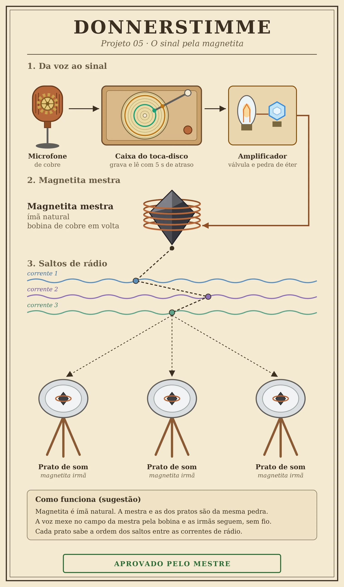
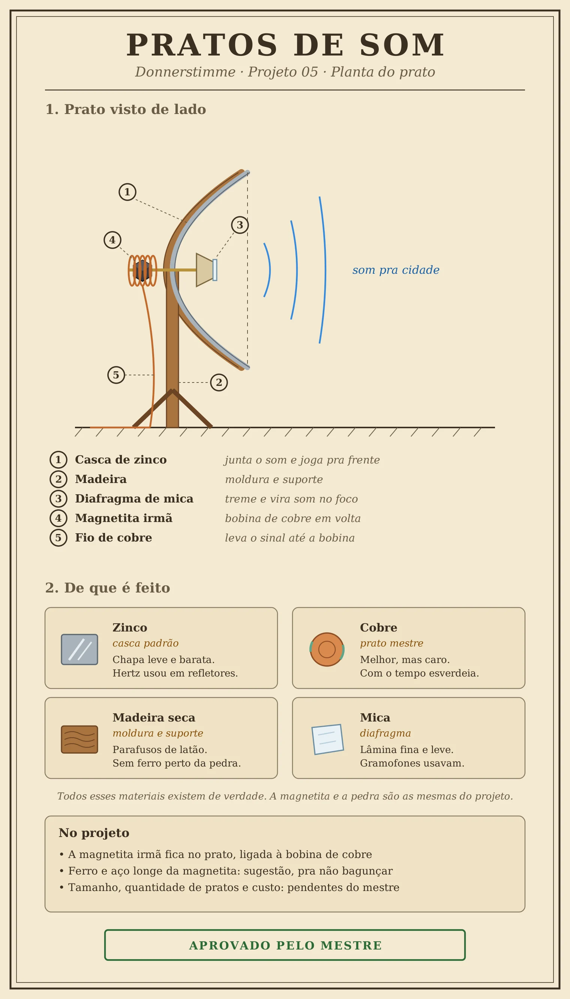
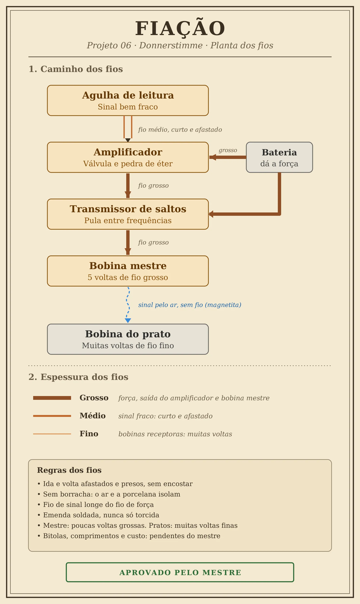
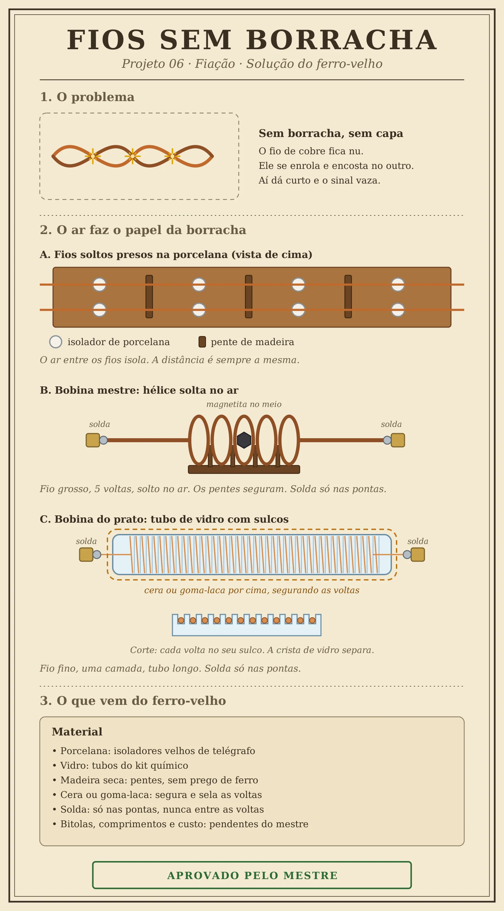

Mercado negro
Contato com NPCs do mercado negro
Kairon vende informação e compra material de laboratório e itens mágicos. Por isso conhece gente do submundo.

25 anos, humano. Nos Aliados, é conhecido como Marck.
Começou com dez pontos distribuídos. Cada tubo vai de 0 a 10. Os críticos nos testes de um atributo fazem ele subir 1 ponto, e quanto mais alto ele está, mais críticos pedem. A contagem fica embaixo de cada tubo: toque em + a cada crítico.
Energia: 9 de 10
Fome: 9 de 10
Sede: 9 de 10

Só pra compor o personagem, sem peso na ficha: um livro grande e gasto, um frasco em forma de gato com água, um cabo dourado ornamentado preso à cintura e um brinco dourado.
É cientista do exército dos Aliados, na base central. Sintetiza toxinas e inventa de tudo que a ciência permitir, usando o que for preciso pra conseguir conhecimento.
Fora do laboratório, escreve crônicas da vida urbana e conta histórias de todo tipo. Pra ele, todo mundo deve saber de tudo.
O efeito do veneno, o que alimenta os tubos e o que ainda falha no protótipo ficam pra definir com o mestre.
Só o mestre lê esta aba. Aqui está o que os outros jogadores não podem saber.
Kairon é um agente duplo. A Hydra mandou ele pros Aliados como espião, mas ele não é leal a nenhum dos dois lados. É leal ao lucro e ao conhecimento.
Tudo que ele descobre na base central passa por um filtro. A Hydra recebe só o que ele escolhe mandar, e o resto ele vende no mercado negro. Ninguém além dele sabe disso.
Em construção. Marcos vai escrever como funciona o submundo que Kairon conhece.
Conhecimento acima de tudo, bom ou ruim, verdadeiro ou falso. Um livro bem escrito vale mais pra ele do que centenas de moedas de ouro.
Procura uma espécie de Torre de Babel. Pra ele é só uma lenda que pode existir, e a família guarda um único relato dela. É por isso que ele a busca.
Quer poder pra controlar as massas e chegar ao topo, usando os países como peões na guerra. Pra isso usa pessoas, sangue e o que mais for preciso. Regra do mestre: nada sai do planeta.
Pontas soltas de propósito, pro mestre puxar do jeito que quiser.
Aqui ficam só os tipos de gente que ele conhece. Quem são, e quantos, fica por conta do mestre.
Contato com NPCs do mercado negro
Kairon vende informação e compra material de laboratório e itens mágicos. Por isso conhece gente do submundo.
Contato com outros tipos de personagens ou NPCs
Ele também cruza com outros tipos de personagens e NPCs, dentro e fora dos dois lados da guerra. Quem são e como se conheceram se resolve em RP.
Kairon tem contato com estas organizações. Quem são as pessoas dentro delas fica em aberto.
Marck e Kairon são o mesmo personagem. Marck é o nome falso que Kairon usa entre os Aliados.
A versão que os outros conhecem.
A verdade. Só o mestre lê.
Livro-caixa dos dólares do mercado negro. Os lançamentos ficam salvos só neste aparelho. Quem abrir a ficha em outro lugar vê o saldo inicial.
Saldo375dólares
Digite quanto ele tem agora. A bolsa lança a diferença no livro-caixa.
Nenhum lançamento ainda.
Invenções e experimentos dele. Toque num cartão pra ler o projeto inteiro.
T.O Categoria: a definir
PROJETO BÉLICO.
Em repouso, a Giftklaue é uma luva de couro escuro, simples, sem nada que chame atenção além de um punho um pouco mais grosso que o normal. Quem olha vê só a luva de um cientista. Ao acionar o mecanismo do punho, placas de aço leve e bronze deslizam pra fora do antebraço, cobrem a mão e o braço, e a luva vira uma manopla blindada, com garras ocas de aço saindo das pontas dos dedos. Tudo acontece num movimento só. O contrário também vale: as placas recolhem e o usuário volta a parecer inofensivo.
Pelo antebraço correm tubos de vidro grosso, escolhidos porque o vidro aguenta o veneno que o metal não aguenta. Cada golpe das garras injeta o conteúdo no alvo, como a presa de uma cobra. O protótipo atual carrega um veneno de luta, que deixa o corpo dormente e derruba os atributos físicos.
O protótipo ainda não está pronto. Kairon trabalha em quatro melhorias:
Soluções em estudo:

Números, bônus e quantidades pendentes de aprovação do mestre.
Experimento do Kairon, em andamento
Os outros viam um remédio. Kairon viu uma ferramenta.
A droga da doutora estava na enfermaria da base, e ele passava por lá mais do que precisava. Não era pelos doentes. Era pra ouvir. Quando o remédio entrava, as células do paciente recebiam a ordem de se refazer numa velocidade que nenhum corpo foi feito pra suportar, e o homem na maca gritava como se o costurassem por dentro com agulha em brasa. As enfermeiras desviavam o olhar. Kairon abria o caderno e anotava o tempo entre um grito e outro.
Todos ali queriam que a dor parasse. Ele queria saber por que ela existia. E quanto mais perguntava, mais uma ideia se fechava na cabeça dele, limpa e fria: a fórmula não curava ninguém. Ela só empurrava a vida da célula pra frente, mais rápido do que a célula aguentava. A cura era um efeito colateral de uma força que ele podia apontar pro outro lado.
O arsênio já fazia metade do trabalho. Ele não rasga nem queima por fora. Entra quieto e apaga a energia da célula por dentro. Agora imagine essa célula, sem fôlego, recebendo a ordem de se reconstruir sem parar. Kairon imaginou, e riu sozinho na bancada, às três da manhã, com a mão tremendo de empolgação. Não lembrava da última vez que tinha comido.
Ele sabia o que aquilo era. Conhecimento era a única coisa que ele não conseguia largar. Projeto, projeto, projeto. Cada resposta abria duas perguntas, e ele precisava da próxima como outros homens precisam da próxima dose. Se alguém dissesse que ele estava viciado, concordaria sem vergonha nenhuma.
O resultado, no papel dele, é uma morte que começa pequena. A pele em volta do corte fica cinza e cede. O corpo enfraquece, o osso perde a firmeza, e por fim a medula, onde o sangue nasce, para de responder. Cada célula que cai solta o próprio veneno sobre as vizinhas. Não precisa de segunda dose. A ruína anda sozinha.
Ele tentou levar aquilo pro ar, um gás pras trincheiras. No ar, o composto se desmanchava antes de chegar a alguém, e Kairon passou duas noites sem falar com ninguém, furioso com um problema que se recusava a obedecer. Foi quando olhou pras garras das manoplas e entendeu que a resposta sempre esteve ali: levar o veneno direto à carne, sem dar tempo dele se perder.
Alguém poderia perguntar quantos teriam que cair até ele aprender o que queria. Kairon nunca fez essa conta. Não por descuido. O número simplesmente não mudava a resposta.
Restam três coisas que ele ainda anota: o arsênio corrói os tubos, então o composto não pode esperar guardado por muito tempo; o efeito completo leva dias; e a velocidade que ele quer só vem com um catalisador arcano que ele ainda não domina. Antídoto não existe, e não é a prioridade dele.
Na última página do caderno, com a letra apertada de quem não dorme, tem uma única frase sublinhada duas vezes: falta pouco.

Efeitos e tempos pendentes de aprovação do mestre
O veneno que já corre pelos tubos do protótipo. Deixa o corpo da vítima dormente e derruba os atributos físicos dela. Efeito, duração e origem pendentes de aprovação do mestre.

Invenção do Kairon, em uso
Kairon fez esse rádio com um objetivo: não ser percebido como espião. É a forma que ele tem de se comunicar com os outros.
O rádio é único. Em vez de falar numa frequência só, ele usa diferentes frequências, e isso disfarça o sinal. Quem escuta não consegue dizer de onde a transmissão sai.
Os Aliados sabem que existe uma mensagem sendo transmitida. Mas não conseguem acessá-la e não conseguem localizar de onde ela parte. O único ponto que dá pra achar é o que recebe, na Alemanha.
É por esse rádio que Kairon fala com a Hydra, e é nele que ele filtra tudo. A Hydra recebe só o que ele escolhe mandar.
Em aberto: quem recebe do outro lado, na Alemanha, e se os Aliados conseguiriam chegar até esse ponto.

Alcance, dificuldade pra rastrear e quem recebe do outro lado pendentes de aprovação do mestre.
Invenção do Kairon, pro show na cidade
A Donnerstimme é um sistema de som pra cidade inteira. O plano é um show, e naquela cidade todas as fontes de comunicação vão estar bloqueadas. A voz não pode depender de nada que o bloqueio alcance.
O microfone é de cobre, mas não fala direto pros pratos. A voz primeiro é gravada num disco de cera, que gira a 78 voltas por minuto. Uma agulha corta a voz na cera e, cerca de 6 voltas depois, outra agulha lê o que acabou de ser gravado. O resultado é um atraso de uns 5 segundos entre quem fala e o som que sai pela cidade.
A máquina tem dois lados. No lado frio ficam o microfone e a gravação, sem nenhuma pedra, porque a cera derrete perto delas. No lado quente ficam a agulha de leitura, o amplificador (com válvula e pedra de éter) e o transmissor de saltos, que pula entre frequências pro sinal não ficar parado num lugar só.

O sinal pela magnetita
O sinal não vai por fio até a cidade. A magnetita mestre, com uma bobina de 5 voltas de fio de cobre, manda o sinal pelo ar, e cada prato de som tem uma magnetita irmã que escuta e repete. No caminho, o sinal pula entre diferentes correntes de rádio.

Os pratos de som
Os pratos ficam espalhados pela cidade, longe do palco, pra a voz que sai deles não voltar pro microfone e virar ruído. A casca é de zinco (cobre no prato mestre) e a moldura é de madeira seca, presa com parafusos de latão. No foco fica uma lâmina de mica, que treme com o sinal e vira voz. Atrás do prato, a magnetita irmã com a bobina de cobre. Ferro e aço ficam longe da magnetita.

Os fios dessa máquina, e o problema de fazer tudo sem borracha, estão no Projeto 06.
Em aberto: de onde vem a magnetita.
Tamanho, quantidade de pratos, alcance e custo a definir com o mestre.
Parte da Donnerstimme, em andamento
Cada pedaço da Donnerstimme pede um fio diferente, e foi isso que travou o primeiro teste: Kairon tratou todo fio como se fosse igual.
Na bobina mestre, que manda o sinal, vão poucas voltas de fio grosso. Ali passa força, e fio fino esquentaria e perderia a voz no caminho. Já na bobina de cada prato, que só escuta, vão muitas voltas de fio fino, bem juntinhas. Quanto mais voltas, mais a magnetita ouve.
Da agulha de leitura até o amplificador o sinal é fraco, quase um sussurro, então vai fio médio, curto, com o fio de ida e o de volta afastados e presos. Do amplificador pro transmissor, e da bateria pros dois, só fio grosso. É onde a força corre.
Fio de sinal nunca anda colado em fio de força, senão um contamina o outro. Toda emenda é soldada.

O problema: sem borracha
Marck, no ferro-velho
Não tinha borracha. Não tinha capa, nem seda, nem nada que servisse de pele para o cobre. Os fios ficaram nus, e fio nu não perdoa. Eles se enrolaram um no outro, encostaram, e a máquina morreu com um estalo seco e um cheiro de queimado.
Marck ficou parado olhando a fumaça subir. Não xingou. Ele nunca xingava quando tinha ideia vindo. Passou a língua nos dentes e começou a revirar o ferro-velho com as duas mãos.
"Se eu não posso cobrir o fio", disse, "então ninguém vai encostar nele. O ar vai ser a minha borracha."
Achou isoladores velhos de telégrafo, daqueles de porcelana branca, rachados no canto mas inteiros no que importava. Pregou uma tábua de madeira seca na bancada, sem prego de ferro, e aparafusou os isoladores em fila. Os fios de ida e de volta passaram por eles, bem esticados e afastados, e entre os isoladores ele encaixou pequenos pentes de madeira para manter a distância sempre igual. Fio nenhum ia encostar em fio nenhum. Acabou o abraço entre eles.
Depois veio a bobina mestre. Com o cobre grosso, que não cede nem se pedir, ele fez cinco voltas soltas no ar, uma hélice que se segurava sozinha. Dois pentes de madeira por baixo mantinham cada volta no seu lugar. No meio, a magnetita. Solda só nas pontas, duas gotas de estanho prendendo o cobre aos terminais. Entre as voltas, nenhuma solda. Só ar.
A bobina do prato era a parte difícil. Fio fino, muitas voltas, e sem capa. Marck pegou um tubo de vidro do kit químico e, com uma lima triangular, abriu um sulco em espiral, devagar, com a respiração presa. Cada volta do fio ia dormir no seu próprio sulco, com uma crista de vidro entre ela e a vizinha. Uma camada só, num tubo comprido. Quando terminou, passou cera derretida por cima, para as voltas não saírem do lugar e a umidade não entrar. Prendeu as pontas com solda e soprou.
Limpou as mãos na calça e olhou para a obra. Era feio, era improvisado e era dele.
Ligou a bateria. E esperou o mestre dizer se funcionava.

Bitolas, comprimentos e custo a definir com o mestre.